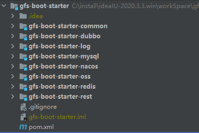

微服务架构升级切换MSE
背景
目前公司的微服务架构使用的注册中心和配置中心是开源版本的Nacos 2.0版本，采用集群部署，三个节点。
长时间使用和观察发现，这三个节点的CPU使用率400%多，但是服务又正常运行。
总之本地搭建的服务节点，运维成本高，风险高，故决定升级为阿里云的MSE的商业产品。
主要的工作内容
一、核心组件升级
spring主版本升级
- 将整个微服务的父依赖：
spring-boot-starter-parent版本由2.0.3.RELEASE升级到2.5.4
1 | |
- spring-cloud-dependencies版本升级，由
Finchley.SR2升级到：2020.0.31
2
3
4
5
6
7<dependency>
<groupId>org.springframework.cloud</groupId>
<artifactId>spring-cloud-dependencies</artifactId>
<version>${spring-cloud.version}</version>
<type>pom</type>
<scope>import</scope>
</dependency>RPC框架升级
- Dubbo从2.2版本升级至2.7.20版本
- 测试阶段发现2.7.15存在dubbo调用稳定性问题（表现为Consumer频繁掉线、偶发Provider寻址失败）
- 经阿里云技术支持确认，升级至2.7.20版本后问题解决
1 | |
1 | |
Nacos客户端升级
- 更换
spring-cloud-starter-alibaba-nacos-config依赖- 由原来的
org.springframework.cloud包更换为：com.alibaba.cloud
- 由原来的
1 | |
- 更换
spring-cloud-starter-alibaba-nacos-discovery依赖- 由原来的
org.springframework.cloud包更换为：com.alibaba.cloud
- 由原来的
1 | |
- 单独引入nacos-client依赖包
1
2
3
4
5<dependency>
<groupId>com.alibaba.nacos</groupId>
<artifactId>nacos-client</artifactId>
<version>2.2.3</version>
</dependency>二、公共模块重构
模块体系优化
废除原有
gfs-common项目- 新建
gfs-boot-starter-common作为基础公共模块 - 将原
gfs-common功能迁移至新模块 - 统一工具类配置文件，工具类依赖版本
- 新建
标准化Starter体系
- 新增
gfs-boot-starter-nacos：统一Nacos客户端版本管理 - 新增
gfs-boot-starter-log：标准化logback日志配置 - 新增
gfs-boot-starter-mysql：统一MySQL驱动及连接配置
- 新增
最终starter项目结构

- 各微服务POM文件统一由父项目管理版本
- 引入标准化Starter组件（nacos/log/mysql等）替代原有分散依赖
三、代码标准化
工具类替换
- 统一更换StringUtils包，为gfs-boot-stater-common的工具类
- 统一更换CollectionUtils包，为gfs-boot-stater-common的工具类
dubbo注解更换
- 低版本的@Service注解更换为高版本的@DubboService
- 低版本的@Reference更换为@DubboReference
四、切换MSE
首先整个微服务部署基于阿里云容器ACK部署，在线升级需要保证业务正常操作，要做到无感切换。以下是整个的切换步骤：
- 首先购买阿里云MSE，建立命名空间gfs-uat，迁移旧nacos的配置文件
- 对配置文件进行重新优化，建立common-config.yaml文件，将dubbo相关的配置，进行抽离，保证整个微服配置完全一致
dubbo: application: id: ${spring.application.name}-${nacos.namespace} name: ${spring.application.name}-${nacos.namespace} qosEnable: false consumer: check: false group: DUBBO filter: dubboConsumerLogFilter timeout: 120000 provider: group: DUBBO filter: dubboProducerLogFilter timeout: 120000 registry: address: nacos://${nacos.url}:8848 id: ${spring.application.name} group: DUBBO port: 8848 useAsConfigCenter: false useAsMetadataCenter: false parameters[namespace]: ${nacos.namespace}
- 对配置文件进行重新优化，建立common-config.yaml文件，将dubbo相关的配置，进行抽离，保证整个微服配置完全一致
- ACK容器建立新的命名空间：gfs-uat
- 通过jenkins的pipeline重新发布新的POD，到gfs-uat命名空间下
- 配置新的gateway的容器service
- 更改nginx的up-stream 配置，将流量切到两个ack环境下：gfs-uat、gfs-prod
- 最后观察gfs-uat环境下的各个服务是否正常，正常后，再切流量完全到gfs-uat下，断掉旧版本的服务
- 最后重新发布gfs-prod下面的所有POD，完成切换
五、升级价值
- 实现商业化组件托管，提升注册中心稳定性
- 构建标准化技术栈，降低版本冲突风险
- 通过Starter体系实现配置/依赖的集中管控
- 提升开发效率，使开发人员更专注与业务代码，降低维护成本
微服务架构升级切换MSE
https://qidanfeng.github.io/my-blog/2025/08/01/微服务架构升级切换MSE/